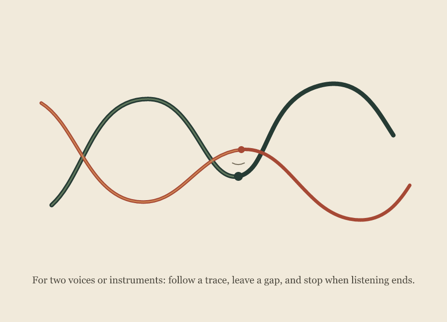

Groundnote · Graphic score
A Place Between Traces

Two unmeasured contours approach, cross, and separate. Their small marks leave a pause suggested but unmeasured. The image is complete as a visual work and open to performance; a drawn path can invite a sound without deciding what another person will make.